산업안전지도사 (2020-07-25 기출문제)
1과목: 산업안전보건법령
1. 산업안전보건법령상 협조 요청 등에 관한 설명으로 옳지 않은 것은?
- 고용노동부장관은 산업재해 예방에 관한 기본계획을 효율적으로 시행하기 위하여 필요하다고 인정할 때에는 관계 행정기관의 장에게 필요한 협조를 요청 할 수 있다.
- 고용노동부를 제외한 행정기관의 장은 사업장의 안전에 관하여 규제를 하려면 미리 고용노동부장관과 협의하여야 한다.
- 고용노동부를 제외한 행정기관의 장은 고용노동부장관이 협의과정에서 해당 규제에 대한 변경을 요구하면 이에 따라야 하며, 고용노동부장관은 필요한 경우 국무총리에게 협의ㆍ조정 사항을 보고하여 확정할 수 있다.
- 고용노동부장관은 산업재해 예방을 위하여 필요하다고 인정할 때에는 사업주에게 필요한 사항을 권고할 수 있다.
- 고용노동부장관이 산정ㆍ통보한 산업재해발생률에 불복하는 건설업체는 통보를 받은 날부터 15일 이내에 고용노동부장관에게 이의를 제기하여야 한다.
(정답률: 74%)

2. 산업안전보건법령상 산업재해발생건수등의 공표에 관한 설명으로 옳지 않은 것은?
- 고용노동부장관은 산업재해를 예방하기 위하여 사망재해자가 연간 2명 이상 발생한 사업장의 산업재해발생건수등을 공표하여야 한다.
- 고용노동부장관은 산업재해를 예방하기 위하여 중대산업사고가 발생한 사업장의 산업재해발생건수등을 공표하여야 한다.
- 고용노동부장관은 도급인의 사업장 중 대통령령으로 정하는 사업장에서 관계수급인 근로자가 작업을 하는 경우에 도급인의 산업재해발생건수등에 관계수급인의 산업재해발생건수등을 포함하여 공표하여야 한다.
- 산업재해발생건수등의 공표의 절차 및 방법에 관한 사항은 대통령령으로 정한다.
- 고용노동부장관은 산업재해발생건수등을 공표하기 위하여 도급인에게 관계수급인에 관한 자료의 제출을 요청할 수 있다.
(정답률: 67%)
3. 산업안전보건법령상 안전보건표지에 관한 설명으로 옳지 않은 것은?
- 안전보건표지의 표시를 명확히 하기 위하여 필요한 경우에는 그 안전보건표지의 주위에 표시사항을 흰색 바탕에 검은색 한글고딕체로 표기한 글자로 덧붙여 적을 수 있다.
- 사업주는 사업장에 설치한 안전보건표지의 색도기준이 유지되도록 관리해야 한다.
- 안전보건표지의 성질상 부착하는 것이 곤란한 경우에도 해당 물체에 직접 도색할 수 없다.
- 안전보건표지 속의 그림의 크기는 안전보건표지 전체 규격의 30 퍼센트 이상이 되어야 한다.
- 안전보건표지는 쉽게 변형되지 않는 재료로 제작해야 한다.
(정답률: 69%)
4. 산업안전보건법령상 안전보건관리책임자의 업무에 해당하는 것을 모두 고른 것은?
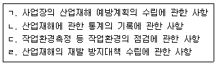
- ㄱ, ㄴ, ㄷ
- ㄱ, ㄴ, ㄹ
- ㄱ, ㄷ, ㄹ
- ㄴ, ㄷ, ㄹ
- ㄱ, ㄴ, ㄷ, ㄹ
(정답률: 62%)
5. 산업안전보건법령상 안전관리자에 관한 설명으로 옳지 않은 것은?(2021년 개정된 규정 적용됨)
- 사업의 종류가 건설업(공사금액 120억원)인 경우, 그 사업주는 사업장에 안전관리자를 두어야 한다.
- 대통령령으로 정하는 사업의 종류 및 사업장의 상시근로자 수에 해당하는 사업장의 사업주는 안전관리전문기관에 안전관리자의 업무를 위탁할 수 있다.
- 사업주가 안전관리자를 배치할 때에는 연장근로ㆍ야간근로 등 해당 사업장의 작업 형태를 고려해야 한다.
- 사업주는 안전관리자를 선임한 경우에는 고용노동부령으로 정하는 바에 따라 선임한 날부터 7일 이내에 고용노동부장관에게 그 사실을 증명할 수 있는 서류를 제출해야 한다.
- 고용노동부장관은 산업재해 예방을 위하여 필요한 경우로서 고용노동부령으로 정하는 사유에 해당하는 경우에는 사업주에게 안전관리자를 대통령령으로 정하는 수 이상으로 늘릴 것을 명할 수 있다.
(정답률: 70%)
6. 산업안전보건법령상 산업안전보건위원회에 관한 설명으로 옳지 않은 것은?
- 산업안전보건위원회는 근로자위원과 사용자위원을 같은 수로 구성ㆍ운영하여야 한다.
- 산업안전보건위원회의 위원장은 위원 중에서 고용노동부장관이 정한다.
- 산업안전보건위원회는 단체협약, 취업규칙에 반하는 내용으로 심의ㆍ의결해서는 아니 된다.
- 사업주는 산업안전보건위원회의 위원에게 직무 수행과 관련한 사유로 불리한 처우를 해서는 아니 된다.
- 산업안전보건위원회의 회의는 근로자위원 및 사용자위원 각 과반수의 출석으로 개의(開議)하고 출석위원 과반수의 찬성으로 의결한다.
(정답률: 78%)
7. 산업안전보건법령상 안전보건관리규정에 관한 설명으로 옳은 것은?
- '안전보건교육에 관한 사항'은 안전보건관리규정에 포함되지 않는다.
- 상시근로자 수가 100명인 금융업의 경우 안전보건관리규정을 작성해야 한다.
- 사업주가 안전보건관리규정을 작성할 때에는 소방ㆍ가스ㆍ전기ㆍ교통 분야 등의 다른 법령에서 정하는 안전관리에 관한 규정과 통합하여 작성할 수 있다.
- 산업안전보건위원회가 설치되어 있지 아니한 사업장의 사업주가 안전보건관리규정을 변경할 경우 근로자대표의 동의를 받지 않아도 된다.
- 사업주는 안전보건관리규정을 작성해야 할 사유가 발생한 날부터 15일 이내에 이를 작성해야 한다.
(정답률: 74%)
8. 산업안전보건법령상 도급의 승인 등에 관한 설명으로 옳은 것을 모두 고른 것은?
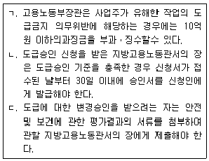
- ㄱ
- ㄴ
- ㄷ
- ㄱ, ㄷ
- ㄴ, ㄷ
(정답률: 50%)
9. 산업안전보건법령상 도급인의 안전조치 및 보건조치 등에 관한 설명으로 옳은 것은?
- 관계수급인 근로자가 도급인의 토사석 광업 사업장에서 작업을 하는 경우 도급인은 1주일에 1회 작업장 순회점검을 실시하여야 한다.
- 도급인은 관계수급인 근로자의 산업재해 예방을 위해 보호구 착용 지시 등 관계수급인 근로자의 작업행동에 관한 직접적인 조치도 포함하여 필요한 안전조치를 하여야 한다.
- 안전 및 보건에 관한 협의체는 회의를 분기별 1회 정기적으로 개최하여야 한다.
- 관계수급인 근로자가 도급인의 사업장에서 작업하는 경우 도급인은 위생시설 등 고용노동부령으로 정하는 시설의 설치 등을 위하여 필요한 장소의 제공 또는 도급인이 설치한 위생시설 이용의 협조를 이행하여야 한다.
- 도급에 따른 산업재해 예방조치의무에 따라 도급인이 작업장의 안전 및 보건에 관한 합동점검을 할 때에는 도급인, 관계수급인, 도급인 및 관계수급인의 근로자 각 2명으로 점검반을 구성하여야 한다.
(정답률: 61%)
10. 산업안전보건법령상 안전보건관리담당자는 고용노동부장관이 실시하는 안전보건에 관한 보수교육을 최소 몇 시간 이상 받아야 하는가? (단, 보수교육의 면제사유 등은 고려하지 않음)
- 4시간
- 6시간
- 8시간
- 24시간
- 34시간
(정답률: 56%)
11. 산업안전보건법령상 관리감독자의 지위에 있는 근로자 A에 대하여 근로자 정기교육시간을 면제할 수 있는 경우를 모두 고른 것은?
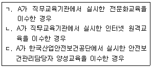
- ㄱ
- ㄱ, ㄴ
- ㄱ, ㄷ
- ㄴ, ㄷ
- ㄱ, ㄴ, ㄷ
(정답률: 67%)
12. 산업안전보건법령상 유해ㆍ위험 기계 등에 대한 방호조치 등에 관한 설명으로 옳지 않은 것은?
- 금속절단기와 예초기에 설치해야 할 방호장치는 날접촉 예방장치이다.
- 작동부분에 돌기부분이 있는 기계는 작동부분의 돌기부분을 묻힘형으로 하거나 덮개를 부착하여야 한다.
- 회전기계에 물체 등이 말려 들어갈 부분이 있는 기계는 회전기계의 물림점에 덮개 또는 방호망을 설치하여야 한다.
- 동력전달 부분이 있는 기계는 동력전달부분에 덮개를 부착하거나 방호망을 설치하여야 한다.
- 지게차에 설치해야 할 방호장치는 헤드 가드, 백레스트(backrest), 전조등, 후미등, 안전벨트이다.
(정답률: 63%)
13. 산업안전보건법령상 대여 공장건축물에 대한 조치의 내용이다. ( )에 들어갈 내용이 옳은 것은?
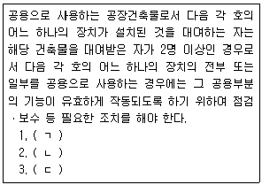
- ㄱ: 국소 배기장치, ㄴ: 국소 환기장치, ㄷ: 배기처리장치
- ㄱ: 국소 배기장치, ㄴ: 전체 환기장치, ㄷ: 배기처리장치
- ㄱ: 국소 환기장치, ㄴ: 전체 환기장치, ㄷ: 국소 배기장치
- ㄱ: 국소 환기장치, ㄴ: 환기처리장치, ㄷ: 전체 환기장치
- ㄱ: 환기처리장치, ㄴ: 배기처리장치, ㄷ: 국소 환기장치
(정답률: 64%)
14. 산업안전보건법령상 안전인증과 안전검사에 관한 설명으로 옳지 않은 것은?
- 「화학물질관리법」에 따른 수시검사를 받은 경우 안전검사를 면제한다.
- 산업용 원심기는 안전검사대상기계등에 해당된다.
- 프레스와 압력용기는 고용노동부장관이 실시하는 안전인증과 안전검사를 모두 받아야 한다.
- 고용노동부장관은 안전인증을 받은 자가 안전인증기준을 지키고 있는지를 3년 이하의 범위에서 고용노동부령으로 정하는 주기마다 확인하여야 한다.
- 안전검사 신청을 받은 안전검사기관은 검사 주기 만료일 전후 각각 30일 이내에 해당 기계ㆍ기구 및 설비별로 안전검사를 하여야 한다.
(정답률: 53%)
15. 산업안전보건기준에 관한 규칙 제662조(근골격계질환 예방관리 프로그램 시행) 제1항 규정의 일부이다. ( )에 들어갈 숫자가 옳은 것은?
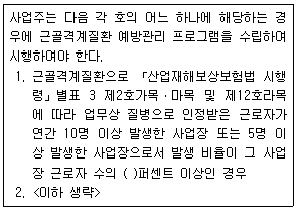
- 5
- 10
- 20
- 30
- 50
(정답률: 65%)
16. 산업안전보건기준에 관한 규칙의 내용으로 옳지 않은 것은?
- 사업주는 순간풍속이 초당 10미터를 초과하는 바람이 불어올 우려가 있는 경우 옥외에 설치된 주행 크레인에 대하여 이탈방지를 위한 조치를 하여야 한다.
- 사업주는 순간풍속이 초당 15 미터를 초과하는 경우에는 타워크레인의 운전 작업을 중지하여야 한다.
- 사업주는 높이가 3미터를 초과하는 계단에 높이 3미터 이내마다 너비 1.2미터 이상의 계단참을 설치하여야 한다.
- 사업주는 높이 1미터 이상인 계단의 개방된 측면에 안전난간을 설치하여야 한다.
- 사업주는 연면적이 400 제곱미터 이상이거나 상시 50명 이상의 근로자가 작업하는 옥내작업장에는 비상시에 근로자에게 신속하게 알리기 위한 경보용 설비 또는 기구를 설치하여야 한다.
(정답률: 60%)
17. 산업안전보건법령상 유해인자의 유해성ㆍ위험성 분류기준에 관한 설명으로 옳지 않은 것은?
- 인화성 액체는 표준압력(101.3 kPa)에서 인화점이 93℃ 이하인 액체이다.
- 54 ℃이하 공기 중에서 자연발화하는 가스는 인화성 가스에 해당한다.
- 20 ℃, 200 킬로파스칼(kPa) 이상의 압력 하에서 용기에 충전되어 있는 가스는 고압가스에 해당한다.
- 유기과산화물은 2가의 －○－○－ 구조를 가지고 3개의 수소원자가 유기라디칼에 의하여 치환된 과산화수소의 유도체를 포함한 액체 유기물질이다.
- 자연발화성 액체는 적은 양으로도 공기와 접촉하여 5분 안에 발화할 수 있는 액체이다.
(정답률: 60%)
18. 산업안전보건법령상 유해인자별 노출 농도의 허용기준과 관련하여 단시간 노출값의 내용이다. ( )에 들어갈 숫자가 순서대로 옳은 것은?
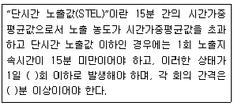
- 4, 30
- 4, 60
- 5, 30
- 5, 60
- 6, 60
(정답률: 59%)
19. 산업안전보건법령상 고용노동부장관이 작업환경측정기관에 대하여 그 지정을 취소하거나 6개월 이내의 기간을 정하여 그 업무의 정지를 명할 수 있는 경우가 아닌 것은?
- 작업환경측정 관련 서류를 거짓으로 작성한 경우
- 정당한 사유 없이 작업환경측정 업무를 거부한 경우
- 위탁받은 작업환경측정 업무에 차질을 일으킨 경우
- 작업환경측정 업무와 관련된 비치서류를 보존하지 않은 경우
- 고용노동부장관이 실시하는 작업환경측정기관의 측정ㆍ분석능력 확인을 6개월 동안 받지 않은 경우
(정답률: 56%)
20. 산업안전보건법령상 일반건강진단의 주기에 관한 내용이다. ( )에 들어갈 숫자가 순서대로 옳은 것은?
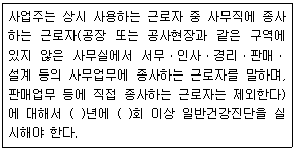
- 1, 1
- 1, 2
- 2, 1
- 2, 2
- 3, 2
(정답률: 70%)
21. 산업안전보건법령상 사업주가 질병자의 근로를 금지해야 하는 대상에 해당하지 않는 사람은?
- 조현병에 걸린 사람
- 마비성 치매에 걸릴 우려가 있는 사람
- 신장 질환이 있는 사람으로서 근로에 의하여 병세가 악화될 우려가 있는 사람
- 심장 질환이 있는 사람으로서 근로에 의하여 병세가 악화될 우려가 있는 사람
- 폐 질환이 있는 사람으로서 근로에 의하여 병세가 악화될 우려가 있는 사람
(정답률: 62%)
22. 산업안전보건법령상 교육기관의 지정 등에 관한 설명으로 옳지 않은 것은?
- 고용노동부장관은 유해하거나 위험한 작업으로서 상당한 지식이나 숙련도가 요구되는 고용노동부령으로 정하는 작업의 경우, 그 작업에 필요한 자격ㆍ면허의 취득 또는 근로자의 기능 습득을 위하여 교육기관을 지정할 수 있다.
- 교육기관의 지정 요건 및 지정 절차는 고용노동부령으로 정한다.
- 고용노동부장관은 지정받은 교육기관이 거짓으로 지정을 받은 경우에는 그 지정을 취소하여야 한다.
- 고용노동부장관은 지정받은 교육기관이 업무정지 기간 중에 업무를 수행한 경우에는 그 지정을 취소하여야 한다.
- 교육기관의 지정이 취소된 자는 지정이 취소된 날부터 3년 이내에는 해당 교육기관으로 지정받을 수 없다.
(정답률: 69%)
23. 산업안전보건법령상 근로감독관 등에 관한 설명으로 옳지 않은 것은?(오류 신고가 접수된 문제입니다. 반드시 정답과 해설을 확인하시기 바랍니다.)
- 근로감독관은 이 법을 시행하기 위하여 필요한 경우 석면해체ㆍ제거업자의 사무소에 출입하여 관계인에게 관계 서류의 제출을 요구할 수 있다.
- 근로감독관은 산업재해 발생의 급박한 위험이 있는 경우 사업장에 출입하여 관계인에게 관계 서류의 제출을 요구할 수 있다.
- 근로감독관은 기계ㆍ설비등에 대한 검사에 필요한 한도에서 무상으로 제품ㆍ원재료 또는 기구를 수거할 수 있다.
- 지방고용노동관서의 장은 근로감독관이 이 법에 따른 명령의 시행을 위하여 관계인에게 출석명령을 하려는 경우, 긴급하지 않는 한 14일 이상의 기간을 주어야 한다.
- 근로감독관은 이 법을 시행하기 위하여 사업장에 출입하는 경우에 그 신분을 나타내는 증표를 지니고 관계인에게 보여 주어야 한다.
(정답률: 60%)
24. 산업안전보건법령상 산업안전지도사로 등록한 A가 손해배상의 책임을 보장하기 위하여 보증보험에 가입해야 하는 경우, 최저 보험금액이 얼마 이상인 보증보험에 가입해야 하는가? (단, A는 법인이 아님)
- 1천만원
- 2천만원
- 3천만원
- 4천만원
- 5천만원
(정답률: 50%)
25. 산업안전보건법령상 산업재해 예방활동의 보조ㆍ지원을 받은 자의 폐업으로 인해 고용노동부장관이 그 보조ㆍ지원의 전부를 취소한 경우, 그 취소한 날부터 보조ㆍ지원을 제한할 수 있는 기간은?
- 1년
- 2년
- 3년
- 4년
- 5년
(정답률: 52%)
2과목: 산업안전일반
26. 학습지도의 원리로 옳은 것을 모두 고른 것은?
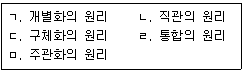
- ㄱ, ㄴ, ㄹ
- ㄱ, ㄷ, ㅁ
- ㄱ, ㄹ, ㅁ
- ㄴ, ㄷ, ㄹ
- ㄴ, ㄹ, ㅁ
(정답률: 46%)
27. 수공구 설계원칙에 관한 설명으로 옳은 것을 모두 고른 것은?
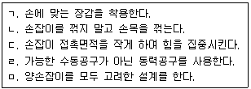
- ㄱ, ㄴ, ㄷ
- ㄱ, ㄹ, ㅁ
- ㄴ, ㄷ, ㄹ
- ㄴ, ㄹ, ㅁ
- ㄷ, ㄹ, ㅁ
(정답률: 53%)
28. 피교육자의 능력에 따라 교육하고 급소를 강조하며, 주안점을 두어 논리적ㆍ체계적으로 반복교육을 실시하는 교육진행 단계는?
- 도입단계
- 확인단계
- 적용단계
- 응용단계
- 제시단계
(정답률: 46%)
29. 위험예지훈련 4라운드를 순서대로 바르게 나열한 것은?
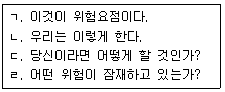
- ㄱ - ㄹ - ㄷ - ㄴ
- ㄷ - ㄹ - ㄱ - ㄴ
- ㄹ - ㄱ - ㄷ - ㄴ
- ㄹ - ㄷ - ㄱ - ㄴ
- ㄹ - ㄷ - ㄴ - ㄱ
(정답률: 66%)
30. 빛의 성질에 관한 설명으로 옳지 않은 것은?
- 과녁이 배경보다 어두우면 대비는 0~100 % 사이의 값이다.
- 명도는 색의 선명한 정도, 즉 색깔의 강약을 말한다.
- 휘도는 단위면적당 표면에서 반사 또는 방출되는 빛의 양을 말한다.
- 조도는 어떤 물체나 표면에 도달하는 빛의 밀도를 말한다.
- 빛을 완전히 발산 및 반사시키는 표면의 반사율은 100 %이다.
(정답률: 36%)
31. 재해조사의 1단계(사실의 확인)에서 수행하지 않는 것은?
- 재해의 직접원인 및 문제점 파악
- 사고 또는 재해발생 시 조치
- 불안전 행동 유무에 관한 관계자 사실 청취
- 작업 중 지도ㆍ지휘의 조사
- 작업 환경ㆍ조건의 조사
(정답률: 47%)
32. 재해조사방법에 관한 설명으로 옳지 않은 것은?
- 피해자에 대한 조사자의 기본적 태도는 동정적이고 피해자의 입장을 이해해야 한다.
- 목격자 등이 증언하는 사실 이외의 추측의 말은 참고로만 한다.
- 사고의 재발방지보다 책임소재 파악을 우선하는 기본적 태도를 갖는다.
- 재해조사는 재해발생 직후 현장을 보존하며 신속하게 수행한다.
- 피해자에 대한 구급조치를 우선한다.
(정답률: 60%)
33. 하인리히(Heinrich)의 도미노(Domino)이론에서 사고의 직접원인이 아닌 것은?
- 불안전한 자세 및 위치
- 권한 없이 행한 조작
- 당황, 놀람, 잡담, 장난
- 부적절한 태도
- 불량한 정리정돈
(정답률: 42%)
34. 산업안전보건법령상 근로자 정기교육의 내용에 해당하지 않는 것은?
- 건강증진 및 질병 예방에 관한 사항
- 산업재해보상보험 제도에 관한 사항
- 기계ㆍ장비의 주요장치에 관한 사항
- 유해ㆍ위험 작업환경 관리에 관한 사항
- 직무스트레스 예방 및 관리에 관한 사항
(정답률: 57%)
35. 위험성평가 실시 주체에 관한 설명으로 옳은 것은?
- 사업주는 위험성평가 시 해당 작업장의 근로자를 참여시켜야 한다.
- 안전보건관리책임자는 유해ㆍ위험요인을 파악하고 그 결과에 따라 개선조치를 시행한다.
- 관리감독자는 위험성평가 실시에 대하여 안전보건관리책임자를 보좌하고 지도ㆍ조언한다.
- 안전보건관리책임자는 주체가 되어 도급사업주와 함께 각자의 역할을 분담하여 위험성 평가를 실시한다.
- 안전ㆍ보건관리자는 위험성평가 실시를 총괄한다.
(정답률: 58%)
36. 산업안전보건법령상 사업주가 위험성평가 실시내용 및 결과를 기록ㆍ보존 할 때 포함되어야 할 사항을 모두 고른 것은?
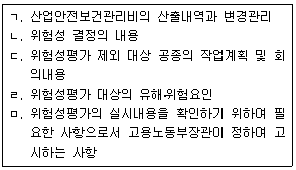
- ㄱ, ㄴ, ㄷ
- ㄱ, ㄷ, ㄹ
- ㄴ, ㄷ, ㄹ
- ㄴ, ㄹ, ㅁ
- ㄷ, ㄹ, ㅁ
(정답률: 59%)
37. 산업안전보건법령상 중대재해 발생 시 업무절차 및 원인조사에 관한 설명으로 옳은 것은?
- 사업주는 중대재해가 발생한 사실을 알게 된 경우에는 대통령령으로 정하는 바에 따라 지체 없이 한국산업안전보건공단에 보고하여야 한다.
- 고용노동부장관은 중대재해 발생 시 사업주가 자율적으로 안전보건개선계획 수립ㆍ시행 후 결과를 제출하면 중대재해 원인조사를 생략한다.
- 누구든지 중대재해 발생 현장을 훼손하거나 고용노동부장관의 원인조사를 방해해서는 아니 된다.
- 중대재해가 발생한 사업장에 대한 원인조사의 내용 및 절차, 그 밖에 필요한 사항은 대통령령으로 정한다.
- 한국산업안전보건공단이사장은 중대재해 발생 시 그 원인 규명 또는 산업재해 예방대책 수립을 위하여 그 발생 원인을 조사할 수 있다.
(정답률: 55%)
38. 교육훈련 기법에서 토의법의 종류가 아닌 것은?
- 강의법(Lecture Method)
- 문제법(Problem Method)
- 포럼(Forum)
- 심포지움(Symposium)
- 사례연구(Case Study)
(정답률: 50%)
39. 안전보건조정자의 업무로 옳은 것을 모두 고른 것은?
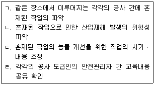
- ㄱ, ㄴ
- ㄱ, ㄷ
- ㄴ, ㄷ
- ㄴ, ㄹ
- ㄷ, ㄹ
(정답률: 57%)
40. 안전보건경영시스템(KOSHA 18001)에 관한 설명으로 옳지 않은 것은?
- “안전보건경영”이란 사업주가 자율적으로 해당 사업장의 산업재해를 예방하기 위하여 안전보건관리체제를 구축하고 정기적으로 위험성평가를 실시하여 잠재유해ㆍ위험 요인을 지속적으로 개선하는 등 산업재해예방을 위한 조치 사항을 체계적으로 관리하는 제반 활동을 말한다.
- “인증심사”란 인증서를 받은 사업장에서 인증기준을 지속적으로 유지ㆍ개선 또는 보완하여 운영하고 있는지를 판단하기 위하여 인증 후 매년 1회 정기적으로 실시하는 심사를 말한다.
- “심사원 양성교육”이란 심사원을 양성하기 위하여 인증운영·인증기준ㆍ심사절차 및 심사요령 등에 관하여 실시하는 총 교육시간이 34시간 이상을 실시하는 안전보건경영시스템 교육을 말한다.
- “연장심사”란 인증 유효기간을 연장하고자 하는 사업장에 대하여 인증 유효기간이 만료되기 전까지 인증의 연장 여부를 결정하기 위하여 실시하는 심사를 말한다.
- “실태심사”란 인증 신청 사업장에 대하여 인증심사를 실시하기 전에 안전보건경영 관련 서류와 사업장의 준비상태 및 안전보건경영활동 운영현황 등을 확인하는 심사를 말한다.
(정답률: 59%)
41. 안전보건진단에 관한 산업안전보건법 제47조 규정의 일부이다. ( )에 들어갈 내용을 순서대로 나열한 것은?
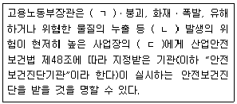
- ㄱ: 감전, ㄴ: 사망사고, ㄷ: 사업주
- ㄱ: 감전, ㄴ: 산업재해, ㄷ: 관리감독자
- ㄱ: 추락, ㄴ: 산업재해, ㄷ: 안전관리자
- ㄱ: 추락, ㄴ: 산업재해, ㄷ: 사업주
- ㄱ: 전도, ㄴ: 사망사고, ㄷ: 관리감독자
(정답률: 63%)
42. 고장률에 관한 욕조곡선(Bathtub Curve)의 설명으로 옳은 것을 모두 고른 것은?
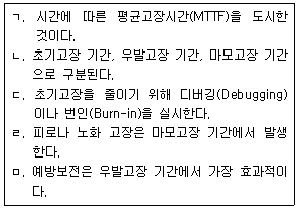
- ㄱ, ㄴ
- ㄱ, ㄴ, ㄷ
- ㄴ, ㄷ, ㄹ
- ㄷ, ㄹ, ㅁ
- ㄴ, ㄷ, ㄹ, ㅁ
(정답률: 49%)
43. 부품의 신뢰도가 R(t)=e-0.5t 일 때 옳지 않은 것은? (단, 시간 t는 년(year)이며, 소수점 아래 넷째자리에서 반올림한다.)
- 고장확률밀도함수는 f(t)=0.5e-0.5t 이다.
- 평균고장시간(MTTF)은 2년이다.
- 부품의 MTTF 동안 신뢰도는 0.368이다.
- 시간에 따라 고장률은 점차 증가한다.
- 부품이 3년 내에 고장 날 확률은 0.777이다.
(정답률: 38%)
44. 다음에 적용된 본질적 안전 설계의 개념으로 옳은 것은?
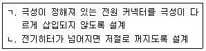
- ㄱ: Fool Proof, ㄴ: Fail Safe
- ㄱ: Fool Proof, ㄴ: Fool Proof
- ㄱ: Fail Safe, ㄴ: Fool Proof
- ㄱ: Fail Safe, ㄴ: Fail Safe
- ㄱ: Fail Proof, ㄴ: Fail Safe
(정답률: 61%)
45. 작업공간 배치의 기본 원칙에 관한 설명으로 옳지 않은 것은?
- 자주 사용하는 요소일수록 사용하기 편리한 지점에 배치한다.
- 사용 및 조작 순서를 고려하여 배치한다.
- 동일한 요소들은 기억과 탐색이 쉽도록 일관된 지점에 배치한다.
- 기능적으로 관련성이 높은 요소들은 분산 배치한다.
- 목적 달성에 중요한 요소일수록 사용하기 편리한 지점에 배치한다.
(정답률: 59%)
46. 다음은 FMEA에서 어떤 고장유형의 심각도, 발생도, 검출도, 가용도를 평가한 결과이다. 이 고장유형에 대한 위험우선순위점수(Risk Priority Number)는 얼마인가?
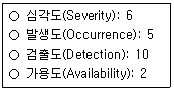
- 7
- 21
- 300
- 600
- 900
(정답률: 48%)
47. 사용자 인터페이스 설계에서 고려되는 사용성(Usability)의 세부내용에 관한설명으로 옳지 않은 것은?
- 학습 용이성: 과거의 경험과 직관에 의해 사용법을 쉽게 익히도록 설계한다.
- 효율성: 저렴한 비용으로 최상의 정보를 얻을 수 있도록 설계한다.
- 기억 용이성: 시간이 지나도 사용법을 기억하기 쉽도록 설계한다.
- 오류 최소화 및 복구 용이성: 오류가 적어야 하고 오류가 발생하더라도 복구하기 쉽게 설계한다.
- 주관적 만족감: 사용자가 만족하고 몰입할 수 있도록 설계한다.
(정답률: 42%)
48. 경계, 경보를 위한 청각신호 선택 지침에 관한 설명으로 옳지 않은 것은?
- 개시기간이 짧은 고강도 신호를 사용한다.
- 주파수는 500~ 3,000 Hz가 가장 효과적이다.
- 장거리 신호는 1,000 Hz 이하로 한다.
- 주의, 집중을 위해서는 변조된 신호를 사용한다.
- 배경소음의 주파수와 동일하게 한다.
(정답률: 56%)
49. 결함수(Fault Tree)가 다음과 같을 때 정상사상 T가 발생할 확률은? (단, 기본사상 a, b, c는 서로 독립이고 발생확률은 각각 0.1이다.)
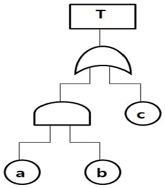
- 0.001
- 0.009
- 0.019
- 0.109
- 0.729
(정답률: 48%)
50. 다음은 4중2 시스템의 신뢰성 블록도(Reliability Block Diagram)이다. 시스템은 동일한 4개의 부품으로 구성되며 4개 중 2개 이상이 정상이면 시스템은 정상 작동한다. 시스템 신뢰도는 얼마인가? (단, 모든 부품의 신뢰도는 0.9이다.)
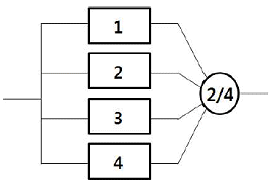
- 0.2916
- 0.6561
- 0.7290
- 0.9963
- 0.9999
(정답률: 35%)
3과목: 기업진단ㆍ지도
51. 인사평가 방법에 관한 설명으로 옳지 않은 것은?
- 서열(ranking)법은 등위를 부여해 평가하는 방법으로, 평가 비용과 시간을 절약할 수 있다.
- 평정척도(rating scale)법은 평가 항목에 대해 리커트(Likert) 척도 등을 이용해 평가한다.
- BARS(Behaviorally Anchored Rating Scale) 평가법은 성과 관련 주요 행동에 대한 수행정도로 평가한다.
- MBO(Management by Objectives) 평가법은 상급자와 합의하여 설정한 목표대비 실적으로 평가한다.
- BSC(Balanced Score Card) 평가법은 연간 재무적 성과 결과를 중심으로 평가한다.
(정답률: 60%)
52. 노사관계에 관한 설명으로 옳지 않은 것은?
- 우리나라에서 단체협약은 1년을 초과하는 유효기간을 정할 수 없다.
- 1935년 미국의 와그너법(Wagner Act)은 부당노동행위를 방지하기 위하여 제정되었다.
- 유니온 숍제는 비조합원이 고용된 이후, 일정기간 이후에 조합에 가입하는 형태이다.
- 우리나라에서 임금교섭은 조합 수 기준으로 기업별 교섭형태가 가장 많다.
- 직장폐쇄는 사용자측의 대항행위에 해당한다.
(정답률: 62%)
53. 조직문화 중 안전문화에 관한 설명으로 옳은 것은?
- 안전문화 수준은 조직구성원이 느끼는 안전 분위기나 안전풍토(safety climate)에 대한 설문으로 평가할 수 있다.
- 안전문화는 TMI(Three Mile Island) 원자력발전소 사고 관련 국제원자력기구(IAEA) 보고서에 의해 그 중요성이 널리 알려졌다.
- 브래들리 커브(Bradley Curve) 모델은 기업의 안전문화 수준을 병적-수동적-계산적-능동적-생산적 5단계로 구분하고 있다.
- Mohamed가 제시한 안전풍토의 요인들은 재해율이나 보호구 착용률과 같이 구체적이어서 안전문화 수준을 계량화하기 쉽다.
- Pascale의 7S모델은 안전문화의 구성요인으로 Safety, Strategy, Structure, System, Staff, Skill, Style을 제시하고 있다.
(정답률: 55%)
54. 동기부여 이론에 관한 설명으로 옳은 것을 모두 고른 것은?
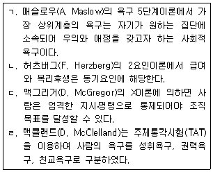
- ㄱ, ㄴ
- ㄱ, ㄹ
- ㄷ, ㄹ
- ㄱ, ㄴ, ㄷ
- ㄴ, ㄷ, ㄹ
(정답률: 37%)
55. 리더십(leadership)에 관한 설명으로 옳은 것은?
- 리더십 행동이론에서 리더의 행동은 상황이나 조건에 의해 결정된다고 본다.
- 리더십 특성이론에서 좋은 리더는 리더십 행동에 대한 훈련에 의해 육성될 수 있다고 본다.
- 리더십 상황이론에서 리더십은 리더와 부하 직원들 간의 상호작용에 따라 달라질 수 있다고 본다.
- 헤드십(headship)은 조직 구성원에 의해 선출된 관리자가 발휘하기 쉬운 리더십을 의미한다.
- 헤드십은 최고경영자의 민주적인 리더십을 의미한다.
(정답률: 42%)
56. 수요예측 방법에 관한 설명으로 옳은 것은?
- 델파이 방법은 일반 소비자를 대상으로 하는 정량적 수요예측 방법이다.
- 이동평균법은 과거 수요예측치의 평균으로 예측한다.
- 시계열분석법의 변동요인에 추세(trend)는 포함되지 않는다.
- 단순회귀분석법에서 수요량 예측은 최대자승법을 이용한다.
- 지수평활법은 과거 실제 수요량과 예측치 간의 오차에 대해 지수적 가중치를 반영해 예측한다.
(정답률: 53%)
57. 재고관리에 관한 설명으로 옳지 않은 것은?
- 경제적주문량(EOQ) 모형에서 재고유지비용은 주문량에 비례한다.
- 신문판매원 문제(newsboy problem)는 확정적 재고모형에 해당한다.
- 고정주문량모형은 재고수준이 미리 정해진 재주문점에 도달할 경우 일정량을 주문하는 방식이다.
- ABC 재고관리는 재고의 품목 수와 재고 금액에 따라 중요도를 결정하고 재고관리를 차별적으로 적용하는 기법이다.
- 재고로 인한 금융비용, 창고 보관료, 자재 취급비용, 보험료는 재고유지비용에 해당한다.
(정답률: 49%)
58. 품질경영기법에 관한 설명으로 옳지 않은 것은?
- SERVQUAL 모형은 서비스 품질수준을 측정하고 평가하는데 이용될 수 있다.
- TQM은 고객의 입장에서 품질을 정의하고 조직 내의 모든 구성원이 참여하여 품질을 향상하고자 하는 기법이다.
- HACCP은 식품의 품질 및 위생을 생산부터 유통단계를 거쳐 최종 소비될 때까지 합리적이고 철저하게 관리하기 위하여 도입되었다.
- 6시그마 기법에서는 품질특성치가 허용한계에서 멀어질수록 품질비용이 증가하는 손실함수 개념을 도입하고 있다.
- ISO 9000 시리즈는 표준화된 품질의 필요성을 인식하여 제정되었으며 제3자(인증기관)가 심사하여 인증하는 제도이다.
(정답률: 29%)
59. 식음료 제조업체의 공급망관리팀 팀장인 홍길동은 유통단계에서 최종 소비자의 주문량 변동이 소매상, 도매상, 제조업체로 갈수록 증폭되는 현상을 발견하였다. 이에 관한 설명으로 옳지 않은 것은?
- 공급사슬 상류로 갈수록 주문의 변동이 증폭되는 현상을 채찍효과(bullwhipeffect)라고 한다.
- 유통업체의 할인 이벤트 등으로 가격 변동이 클 경우 주문량 변동이 감소할 것이다.
- 제조업체와 유통업체의 협력적 수요예측시스템은 주문량 변동이 감소하는데 기여할 것이다.
- 공급사슬의 정보공유가 지연될수록 주문량 변동은 증가할 것이다.
- 공급사슬의 리드타임(lead time)이 길수록 주문량 변동은 증가할 것이다.
(정답률: 52%)
60. 스트레스의 작용과 대응에 관한 설명으로 옳지 않은 것은?
- A유형이 B유형 성격의 사람에 비해 스트레스에 더 취약하다.
- Selye가 구분한 스트레스 3단계 중에서 2단계는 저항단계이다.
- 스트레스 관련 정보수집, 시간관리, 구체적 목표의 수립은 문제중심적 대처 방법이다.
- 자신의 사건을 예측할 수 있고, 통제 가능하다고 지각하면 스트레스를 덜 받는다.
- 긴장(각성) 수준이 높을수록 수행 수준은 선형적으로 감소한다.
(정답률: 42%)
61. 김부장은 직원의 직무수행을 평가하기 위해 평정척도를 이용하였다. 금년부터는 평정오류를 줄이기 위한 방법으로 '종업원 비교법'을 도입하고자 한다. 이때 제거 가능한 오류(a)와 여전히 존재하는 오류(b)를 옳게 짝지은 것은?
- a: 후광오류, b: 중앙집중오류
- a: 후광오류, b: 관대화오류
- a: 중앙집중오류, b: 관대화오류
- a: 관대화오류, b: 중앙집중오류
- a: 중앙집중오류, b: 후광오류
(정답률: 44%)
62. 인사 담당자인 김부장은 신입사원 채용을 위해 적절한 심리검사를 활용 하고자 한다. 심리검사에 관한 설명으로 옳지 않은 것은?
- 다른 조건이 모두 동일하다면 검사의 문항 수는 내적 일관성의 정도에 영향을 미치지 않는다.
- 반분 신뢰도(split-half reliability)는 검사의 내적 일관성 정도를 보여주는 지표이다.
- 안면 타당도(face validity)는 검사문항들이 외관상 특정 검사의 문항으로 적절하게 보이는 정도를 의미한다.
- 준거 타당도(criterion validity)에는 동시 타당도(concurrent validity)와 예측타당도(predictive validity)가 있다.
- 동형 검사 신뢰도(equivalent-form reliability)는 동일한 구성개념을 측정하는 두 독립적인 검사를 하나의 집단에 실시하여 측정한다.
(정답률: 48%)
63. 다음에 설명하는 용어는?
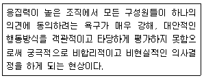
- 집단사고(groupthink)
- 사회적 태만(social loafing)
- 집단극화(group polarization)
- 사회적 촉진(social facilitation)
- 남만큼만 하기 효과(sucker effect)
(정답률: 53%)
64. 용접공이 작업 중에 보호안경을 쓰지 않으면 시력손상을 입는 산업재해가 발생한다. 용접공의 행동특성을 ABC행동이론(선행사건, 행동, 결과)에 근거하여 기술한 내용으로 옳은 것을 모두 고른 것은?(문제 오류로 확정 답안 발표시 모두 정답처리 되었습니다. 여기서는 임의로 1번을 누르면 정답 처리 됩니다.)
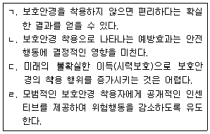
- ㄱ, ㄷ
- ㄴ, ㄹ
- ㄱ, ㄷ, ㄹ
- ㄴ, ㄷ, ㄹ
- ㄱ, ㄴ, ㄷ, ㄹ
(정답률: 45%)
65. 휴먼에러 발생 원인을 설명하는 모델 중, 주로 익숙하지 않은 문제를 해결할 때 사용하는 모델이며 지름길을 사용하지 않고 상황파악, 정보수집, 의사결정, 실행의 모든 단계를 순차적으로 실행하는 방법은?
- 위반행동 모델(violation behavior model)
- 숙련기반행동 모델(skill-based behavior model)
- 규칙기반행동 모델(rule-based behavior model)
- 지식기반행동 모델(knowledge-based behavior model)
- 일반화 에러 모형(generic error modeling system)
(정답률: 42%)
66. 소음의 특성과 청력손실에 관한 설명으로 옳지 않은 것은?
- 0 dB 청력수준은 20대 정상 청력을 근거로 산출된 최소역치수준이다.
- 소음성 난청은 달팽이관의 유모세포 손상에 따른 영구적 청력손실이다.
- 소음성 난청은 주로 1,000 Hz 주변의 청력손실로부터 시작된다.
- 소음작업이란 1일 8시간 작업을 기준으로 85 dBA 이상의 소음이 발생하는 작업이다.
- 중이염 등으로 고막이나 이소골이 손상된 경우 기도와 골도 청력에 차이가 발생할 수 있다.
(정답률: 42%)
67. 인간의 정보처리과정에 관한 설명으로 옳은 것을 모두 고른 것은?
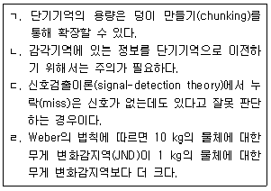
- ㄴ, ㄷ
- ㄱ, ㄴ, ㄹ
- ㄱ, ㄷ, ㄹ
- ㄴ, ㄷ, ㄹ
- ㄱ, ㄴ, ㄷ, ㄹ
(정답률: 21%)
68. 어떤 가설을 받아들이고 나면 다른 가능성은 검토하지도 않고 그 가설을 지지하는 증거만을 탐색해서 받아들이는 현상에 해당하는 것은?
- 대표성 어림법(representativeness heuristic)
- 가용성 어림법(availability heuristic)
- 과잉확신(overconfidence)
- 확증 편향(confirmation bias)
- 사후확신 편향(hindsight bias)
(정답률: 59%)
69. 근로자 건강진단에 관한 설명으로 옳지 않은 것은?
- 납땜후 기판에 묻어 있는 이물질을 제거하기 위하여 아세톤을 취급하는 근로자는 특수건강진단 대상자이다.
- 우레탄수지 코팅공정에 디메틸포름아미드 취급 근로자의 배치후 첫 번째 특수건강진단 시기는 3개월 이내이다.
- 6개월간 오후 10시부터 다음날 오전 6시 사이의 시간 중 작업을 월 평균 60시간 이상 수행하는 근로자는 야간작업 특수건강진단 대상자이다.
- 직업성 천식 및 직업성 피부염이 의심되는 근로자에 대한 수시건강진단의 검사 항목이 있다.
- 정밀기계 가공작업에서 금속가공유 취급시 노출되는 근로자는 배치전ㆍ특수건강진단 대상자이다.
(정답률: 53%)
70. 관리대상 유해물질 관련 국소배기장치 후드의 제어풍속에 관한 설명으로 옳지 않은 것은?
- 가스 상태 물질 포위식 포위형 후드는 제어풍속이 0.4 m/s 이상이다.
- 가스 상태 물질 외부식 측방흡인형 후드는 제어풍속이 0.5 m/s 이상이다.
- 가스 상태 물질 외부식 상방흡인형 후드는 제어풍속이 1.0 m/s 이상이다.
- 입자 상태 물질 포위식 포위형 후드는 제어풍속이 1.0 m/s 이상이다.
- 입자 상태 물질 외부식 상방흡인형 후드는 제어풍속이 1.2 m/s 이상이다.
(정답률: 40%)
71. 산업위생의 범위에 관한 설명으로 옳지 않은 것은?
- 새로운 화학물질을 공정에 도입하려고 계획할 때, 알려진 참고자료를 바탕으로 노출 위험성을 예측한다.
- 화학물질 관리를 위해 국소배기장치를 직접 제작 및 설치한다.
- 작업환경에서 발생할 수 있는 감염성질환을 포함한 생물학적 유해인자에 대한 위험성 평가를 실시한다.
- 노출기준이 설정되지 않은 물질에 대하여 노출수준을 측정하고 참고자료와 비교하여 평가한다.
- 동일한 직무를 수행하는 노동자 그룹별로 직무특성을 상세하게 기술하고 유사노출그룹을 분류한다.
(정답률: 58%)
72. 미국산업위생학회에서 산업위생의 정의에 관한 설명으로 옳지 않은 것은?
- 인지란 현재 상황의 유해인자를 파악하는 것으로 위험성 평가(Risk Assessment)를 통해 실행할 수 있다.
- 측정은 유해인자의 노출 정도를 정량적으로 계측하는 것이며 정성적 계측도 포함한다.
- 평가의 대표적인 활동은 측정된 결과를 참고자료 혹은 노출기준과 비교하는 것이다.
- 관리에서 개인보호구의 사용은 최후의 수단이며 공학적, 행정적인 관리와 병행해야 한다.
- 예측은 산업위생 활동에서 마지막으로 요구되는 활동으로 앞 단계들에서 축적 된 자료를 활용하는 것이다.
(정답률: 35%)
73. 국가별 노출기준 중 법적 제재력이 없는 것은?
- 독일 GCIHHCC의 MAK
- 영국 HSE의 WEL
- 일본 노동성의 CL
- 우리나라 고용노동부의 허용기준
- 미국 OSHA의 PEL
(정답률: 49%)
74. 산업위생관리의 기본원리 중 작업관리에 해당하는 것은?
- 유해물질의 대체
- 국소배기 시설
- 설비의 자동화
- 작업방법 개선
- 생산공정의 변경
(정답률: 50%)
75. 유기용제의 일반적인 특성 및 독성에 관한 설명으로 옳은 것을 모두 고른 것은?
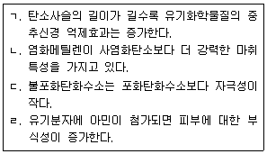
- ㄱ, ㄴ
- ㄱ, ㄷ
- ㄱ, ㄹ
- ㄴ, ㄷ
- ㄴ, ㄹ
(정답률: 30%)